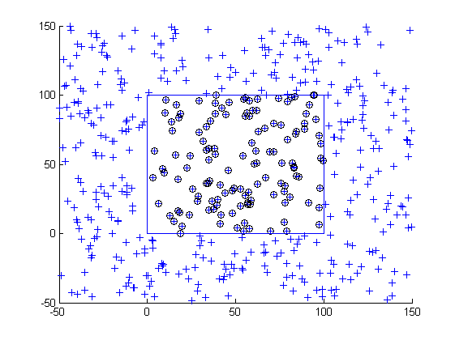

function checkClipPoints(varargin) %CHECKCLIPPOINTS One-line description here, please. % output = checkClipPoints(input) % % Example % checkClipPoints % % See also % % % ------ % Author: David Legland % e-mail: david.legland@grignon.inra.fr % Created: 2010-05-13, using Matlab 7.9.0.529 (R2009b) % Copyright 2010 INRA - Cepia Software Platform. % generate 2D points in -50->150 in each direction points = rand(500, 2)*200 - 50; % create new figure figure(1); clf; axis([-50 150 -50 150]); hold on; % draw all points drawPoint(points, 'b+'); % clip points box = [0 100 0 100]; clipped = clipPoints(points, box); % draw clipped points drawPoint(clipped, 'ko'); drawBox(box);